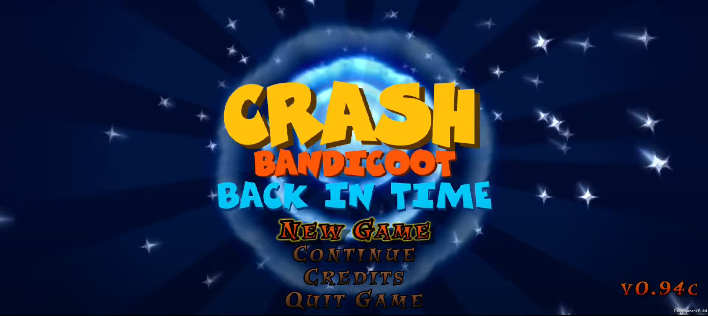

Crash Bandicoot: Back in Time

Darmowa fanowska platformówka z kultowym jamrajem w roli głównej. Gracze przechodzą poziomy, przeskakują przez przeszkody i otwierają skrzynie, aby zdobywać nagrody.
Crash Bandicoot: Back in Time
- 25 poziomów - 10 klasycznych poziomów 3D, 10 w stylu poziomów z kaset z Crash Bandicoot 4: It's About Time oraz 5 prób Uka-Uki
- Crash Creator, dzięki któremu można tworzyć własne poziomy
- Nowa muzyka
- Możliwość grania jako Crash albo jako Coco
>
Moje zadania
- Przygotowanie listy assetów do ekstrakcji
- Testowanie rozgrywki
- Proponowanie rozwiązań do problemów w rozgrywce
- A także kilka własnych poziomów stworzonych w Crash Creatorze
Linki
Strona internetowa: https://gembit.itch.io/crash-back-in-time
Discord: https://discord.gg/n3ev7g3RnE
Strona internetowa z poziomami stworzonymi przez graczy: https://crashcreator.com/